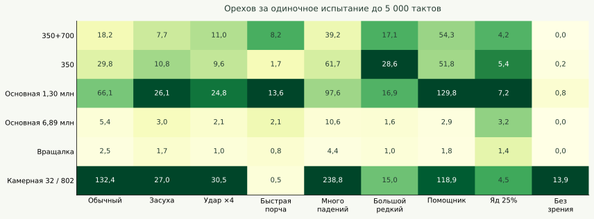
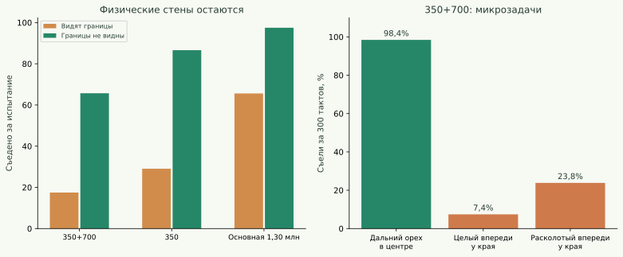
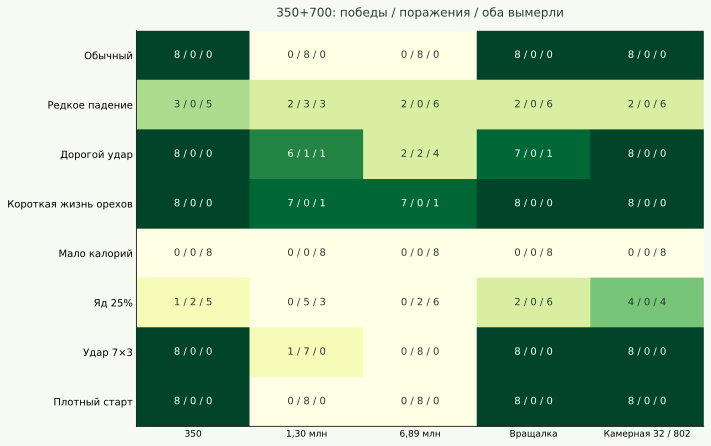
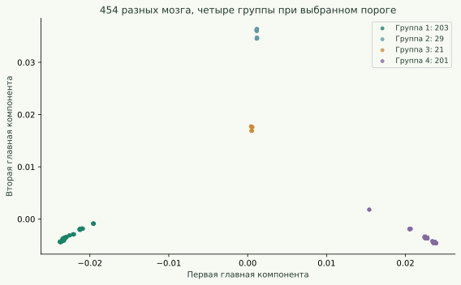

Крутые — в своей нише
Они умеют добывать орехи точно и быстро. Это не случайная толпа, которой иногда везёт попасть дубиной. Каждый из 454 мозгов прошёл четыре повтора четырёх простых задач без единой неудачи.
Но универсальными выживальщиками они не стали. В обычных общих мирах уступили обеим основным популяциям. При дорогих ударах и быстро исчезающих орехах расклад меняется в их пользу. У границ карты их поведение резко ломается.
Навык у них действительно есть
Каждый мозг проверен по четыре раза с разными случайными последовательностями. Один орех, без других дикарей и новой еды, максимум 300 тактов. Во всех этих задачах граница не мешает исходной постановке.
| Орех | Успешных попыток | Тактов до еды, среднее |
|---|---|---|
| Целый прямо впереди | 1816/1816 | 4,2 |
| Целый под ногами | 1816/1816 | 14,8 |
| Целый справа, в 3 клетках | 1816/1816 | 16,1 |
| Целый сзади, в 3 клетках | 1816/1816 | 11,0 |
Особенно показателен целый орех под ногами. Дубина бьёт перед собой, поэтому просто нажать «удар» и «есть» недостаточно: нужно сойти с клетки, повернуться, расколоть орех, вернуться и съесть. Они справились во всех 1 816 попытках. Это демонстрирует рабочую последовательность реакций, но не доказывает внутреннего планирования: сеть по-прежнему не имеет памяти.
Что видит их мозг
В изолированной картинке с целым орехом в двух клетках впереди средняя вероятность шага вперёд — 99,3%. С расколотым орехом прямо впереди — почти 100%. Когда целый орех уже в зоне удара, вероятность удара — 61,6%. Расколотый под ногами вызывает «есть» с вероятностью 83,1% при энергии 120.
Это не проценты успеха длинного испытания, а вероятности одного решения в строго заданной картинке, усреднённые по всем мозгам. Сеть стохастическая: даже правильный навык не означает выбор одного действия в каждом такте.
В одиночном мире отключение видимости целых орехов уменьшило добычу с 18,2 до 0,7; расколотых — до 2,1; всего зрения — практически до нуля. Отключение стволов почти ничего не изменило: 17,4. Их основная опора — прямое распознавание пищи, а не один только ориентир «дерево рядом».

Камерная 32 — конкретное семейство fresh-32-802 из предыдущего исследования. Это сильный одиночный кормилец, но не представитель всех возможных камерных популяций. Исторические сохранения не уравнены по времени обучения.
Главная найденная ошибка: они плохо реагируют на границу
На поле 32×32 дальний целый орех в пяти клетках впереди, вдали от краёв, был съеден в 98,4% из 256 испытаний. А целый орех всего в одной клетке впереди, но рядом с краем карты, — только в 7,4%. Даже расколотый орех в той же позиции у края съеден лишь в 23,8%.
Эти разные постановки подсказали проблему, но сами по себе ещё не доказывали её причину. Поэтому я сделал отдельное вмешательство: оставил физические стены, орехи и правила мира, но убрал только визуальный канал границ. В парных испытаниях добыча выросла с 17,5 до 65,7 ореха — в 3,8 раза.

Значит, слабый результат в маленькой комнате нельзя целиком объяснить плохой добычей еды. Визуальный сигнал стены мешает их политике действий. Например, видимая граница прямо перед носом в пустой сцене вызывает «есть» примерно с вероятностью 63%, хотя еды там нет.
Это не рекомендация выключить стены в игре. Такой тест отключает информацию и выявляет ошибочную зависимость. Нормальная цель дальнейшего обучения — научить их правильно обращаться с краями, сохранив полезные зрительные навыки.
Где они выигрывают, а где нет
В каждой ячейке ниже восемь соревнований: четыре случайные карты, каждая со сменой стартовых сторон. Обычно 16 против 16 на 32×32 с восемью деревьями, 10 000 тактов. Победа — больше живых потомков в конце. Если обе стороны вымерли, это отдельно отмечено, а не считается успехом.

В обычных условиях «350+700» выиграли 8/8 у «350», 8/8 у «вращалки» и 8/8 у проверенной камерной семьи. Но проиграли 8/8 основной на 1,30 млн и 8/8 основной на 6,89 млн.
При короткой жизни обоих видов орехов выиграли 7/8 у основной 1,30 млн (один раз обе стороны вымерли) и 7/8 у основной 6,89 млн (один раз обе стороны вымерли). При дешёвых ударах основная 1,30 млн снова выигрывает все восемь игр; при цене удара 8 «350+700» выигрывают шесть, одну проигрывают, в одной обе стороны вымирают.
Что именно в сроке жизни орехов важно
Разделил срок жизни целого и расколотого ореха. Соперник — основная 1,30 млн. Все остальные параметры сохранены.
| Условие: целый / расколотый, тактов | Побед | Поражений | Оба вымерли |
|---|---|---|---|
| Обычный: 1 200 / 400 | 0 | 8 | 0 |
| Быстро исчезает целый: 30 / 400 | 8 | 0 | 0 |
| Быстро исчезает расколотый: 1 200 / 15 | 1 | 7 | 0 |
| Быстро исчезают оба: 30 / 15 | 7 | 0 | 1 |
| 30 / 15, мутации выключены | 7 | 0 | 1 |
| Обычный срок, удар стоит 0,1 | 0 | 8 | 0 |
| Обычный срок, удар стоит 8 | 6 | 1 | 1 |
Короткая жизнь целого ореха сама по себе переворачивает результат: с 0/8 до 8/8 побед. Короткая жизнь только расколотого такого преимущества не даёт. Похоже, важна способность успеть обработать свежий орех до его исчезновения, а не просто быстро доесть уже готовый.
Повтор без мутаций сохранил ключевую картину: обычный мир — поражение основной 1,30 млн во всех восьми играх; короткая жизнь обоих орехов — семь побед и взаимное вымирание. Следовательно, преимущество не требует, чтобы в ходе соревнования случайно появился новый удачный мутант.
Они сами работают или подбирают чужое?
Для этого я добавил в отдельную исследовательскую копию ядра точную запись автора раскалывания каждого ореха. В обычных соревнованиях с основной 1,30 млн у «350+700» примерно 51,0% съеденных орехов расколола та же особь, 24,2% — другой член её стороны, 24,8% — соперник.
То есть они и добывают сами, и используют чужую работу. Называть их исключительно «нахлебниками» неправильно. Эти доли относятся к конкретным соревнованиям, включая размножение и меняющуюся численность, а не являются неизменной чертой каждого мозга.
Что изменилось между «350» и «350+700»
Пресеты имеют разные мозги и разное число особей. Это сравнение двух сохранённых популяций; их имена и сходство согласуются с продолжением одной линии, но файл пресета не содержит полной цепочки родителей.
| Показатель | 350 | 350+700 |
|---|---|---|
| Время до еды: орех впереди | 7,5 такта | 4,0 такта |
| Время до еды: целый под ногами | 40,0 такта | 15,2 такта |
| Орехов одному, обычные условия | 29,8 | 18,2 |
| Орехов одному, короткий срок жизни | 1,7 | 8,2 |
| Полезных ударов в одиночном мире | 36,9% | 47,5% |
Второй этап сделал их быстрее в простых задачах и избирательнее в ударах, но одновременно ухудшил одиночное питание в обычной маленькой комнате. Они победили «350» во всех обычных парных соревнованиях, несмотря на меньшую одиночную добычу. Поэтому «эволюционировали дальше» не означает «улучшились во всём».
Особенно заметна цена специализации у края: расколотый орех перед границей съели 96,9% у «350» и только 23,8% у «350+700». Быстрое выполнение знакомых задач усилилось, а перенос в некоторые другие картинки стал хуже.
Слабости помимо стен
- Очень низкая питательность. При 10 энергии в орехе вместо 60 обе стороны вымирали во всех проверенных соревнованиях, независимо от соперника. Это слишком суровая для всех этих популяций среда, а не особый провал одного семейства.
- Ядовитая еда. В сцене с ядовитым расколотым орехом под ногами 36,5% из 192 испытаний закончились его поеданием. При 25% ядовитых орехов в мире до 5 000 тактов не дожила ни одна проверенная особь «350+700». Надёжной защиты от яда нет.
- Нельзя считать отличие реакции на яд доказательством обучения ему. Ядовитый и съедобный орехи кодируются разными входами. Даже мозг, никогда не обучавшийся яду, может не видеть в нём привычную еду. Это отдельная причина не делать вывод о ядовитом тренировочном мире.
Что можно сказать об их происхождении
В пресете 454 разных генома, а не копии одного мозга. Архитектура у всех — один скрытый слой 32 нейрона, 733 входа, 6 действий; 23 686 параметров. Записанный такт сохранения — 695 084. Это такт того мира, а не доказанная суммарная длительность всей родословной.
В среднем различия между двумя случайными мозгами этой популяции невелики: RMS-разница весов около 0,040. У основной 1,30 млн — около 0,138. По выбранному диапазону порогов генетического расстояния выделяются четыре группы численностью 203, 201, 29 и 21. Это генетические группы, не пространственные «племена»: координат и родословной в пресете нет.

Ближайшие мозги из «350» отличаются от «350+700» в среднем на RMS 0,119; из основной 1,30 млн — 0,145; из «вращалки» — 0,545; из основной 6,89 млн — 0,569. У ближайших пар с «350» совпадает около 50,8% координат весов, с основной 1,30 млн — 37,6%. Это согласуется с близостью к ранней основной линии, но не доказывает конкретный порядок пересадок между мирами.
Реконструкция тренировочной среды
- Быстро исчезающая еда — наиболее сильная гипотеза. Особенно целые орехи: уменьшение только их срока жизни переворачивает соревнование с основной 1,30 млн. Навык быстро подойти, расколоть и съесть этому соответствует.
- Дорогие или часто бесполезные удары — правдоподобная гипотеза. Удары стали полезными чаще, а повышение их цены улучшает относительное конкурентное положение.
- Редкий контакт с границами — правдоподобная гипотеза. Например, большая карта или жизнь далеко от края. Но возможна и другая история: отбор в специфических местах, где неверная реакция на границу не мешала оставлять потомство.
- Точный размер карты, число деревьев, сроки 350 и 700 тысяч как этапы, последовательность миров и параметры обучения восстановить нельзя. Несколько разных сред могут отобрать похожие стратегии. Настройки твоего уникального мира я намеренно не открывал.
Как проверял и где границы выводов
Полный протокол
Шесть фиксированных популяций: 350+700 (454 мозга), 350 (257), основная 1,30 млн (622), основная 6,89 млн (757), вращалка (315), камерная fresh-32-802 (64). В обычной батарее — 33 условия × 192 испытания каждой популяции. В уточняющей — 9 условий × 256. В окончательной проверке простых навыков — все 454 мозга × 4 повтора × 4 задачи. Все миры обычные, без сезонов, компаса и температуры.
Одиночная база: 16×16, два дерева, вероятность падения 0,04, орех даёт 60 энергии, жизнь стоит 0,25 за такт, удар стоит 2, область удара 3×1, срок целого ореха 1 200, расколотого 400, максимальный возраст 10 000. Стандартный начальный запас целых орехов сохранён. Испытание идёт до смерти или 5 000 тактов; размножение отключено без списания его цены. Мозги заморожены.
В батарее изменяется один параметр или явно обозначенная пара: падение 0,01 / 0,002 / 0,16; еда 10 / 120; удар 8 / 0,1; сроки 30 и 15 / 5 000 и 5 000; яд 25%; удар 7×3 / 1×1; размер 64 с двумя деревьями; восемь деревьев вместо двух. «Помощник» раскалывает все целые орехи перед каждым тактом, оставляя их остаточный срок жизни; это тест доступности готовой еды, не модель конкретного соседа.
Вмешательства в зрение обнуляют веса соответствующих входов в копии мозга, что эквивалентно удалению сигналов при прямом проходе. Это отдельно проверено тестом для старого и нового формата сети. Исходные пресеты не менялись. Исследовательская запись автора каждого ореха проверена на идентичность полного состояния мира и случайных последовательностей с исходным ядром после 500 тактов.
Соревнования: 32×32, восемь деревьев, стандартно 16 против 16, при плотном старте 64 против 64, предел 256 жителей. 10 000 тактов, обычные рождение и мутации 0,25; отдельно указанные «frozen» варианты сохраняют размножение, но ставят мутации в ноль. Четыре семени карты 1601–1604 со сменой сторон; случайная выборка мозгов и случайное распределение стартовых позиций. При полном вымирании арена останавливается без переселения.
Количество орехов усредняется по всем испытаниям, включая ранние смерти. Время до первой еды — только по успешным попыткам. 192 или 256 особей одного пресета не означают столько же независимых эволюций. Это подробное сравнение конкретных сохранённых популяций, не статистическое доказательство превосходства всего метода их обучения. Часть уточняющих условий выбрана после первых результатов, поэтому это исследование гипотез, а не заранее зарегистрированный слепой турнир.
Генетические сравнения используют RMS-разницу весов после приведения старой и новой схемы хранения к общему порядку. Перестановки эквивалентных скрытых нейронов не выравнивались. У близких унаследованных сетей это полезная мера, но расстояние между независимо созданными сетями не является мерой поведенческого различия.
Мозги скопированы в отдельную исследовательскую папку; приложение и пользовательские сохранения не изменены. Полные исходные пресеты оставлены на Mac, в публичный архив входят результаты и код, но не сами геномы.